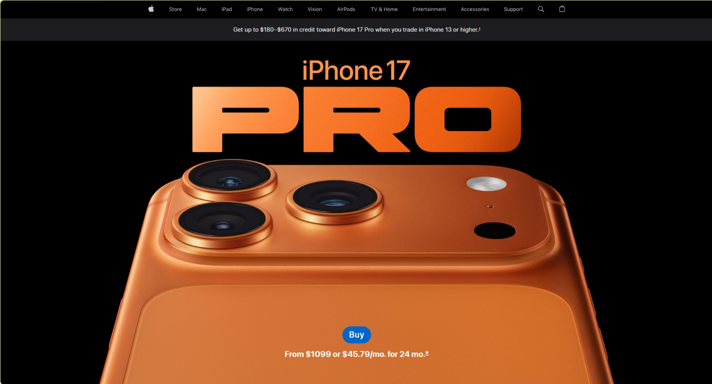
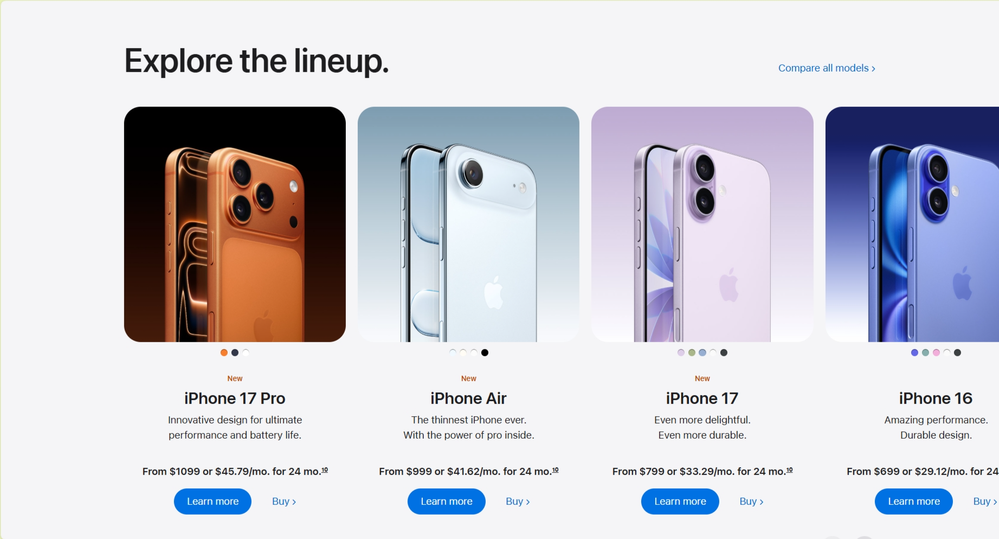
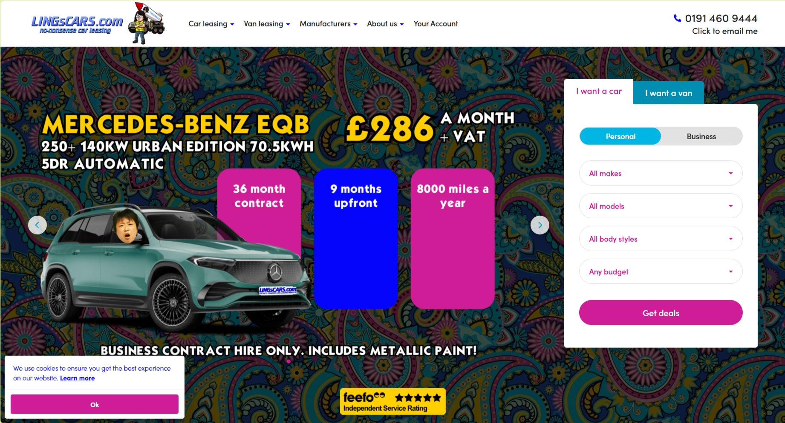

Follows the Principle: Apple Homepage
https://www.apple.com


The Apple homepage uses large, bold headlines on a clean white or
very dark background plus high-quality product photos, which creates
strong contrast and makes the main message and call-to-action stand
out clearly. This kind of strong but controlled contrast improves
clarity and legibility.
Violates the Principle: Ling’s Cars
https://www.lingscars.com

Ling’s Cars uses extremely saturated backgrounds, flashing graphics,
and many clashing colors, so nothing stands out and the content
competes with the visuals instead of being highlighted.
How I’d Improve It:
I’d cut the color palette down to 2–3 main colors, tone down the
neon backgrounds, and use dark text on light sections (or vice
versa) so the headings, prices, and buttons are easy to see at a
glance.